0Willkommen
Zeitrad der Sonne, 3300 bis 30 v. Chr.
Unterrichtsmedien zum Arbeiten, Zuschauen und Anfassen. Jedes entsteht mit einem KI-Bauplan – und ist in der Gesamtschule Meiderich im Einsatz.
Ich bringe Thema und Didaktik mit. Ein Skill – ein gespeicherter Bauplan für die KI – bringt Gestaltung, Technik und Prüfregeln mit.
Thema, Jahrgang und Wünsche – meist in einem Satz.
Der Skill legt Stil, Technik und Qualitätsregeln fest. Nichts wird neu erfunden.
Drehbuch, Kapitelübersicht oder Aufgaben: Ich prüfe und ergänze.
Die KI baut, testet und sieht sich das Ergebnis selbst an.
Was einmal gut war, steckt im Skill – und ist beim nächsten Thema sofort wieder da.
/einfaches-ab
/papiertheater-bauen
/popupbook
Für die Klasse sieht es aus wie ein Blatt Papier. Für mich ist es ein Fenster in den Raum: Ich sehe jede Antwort, während sie entsteht.
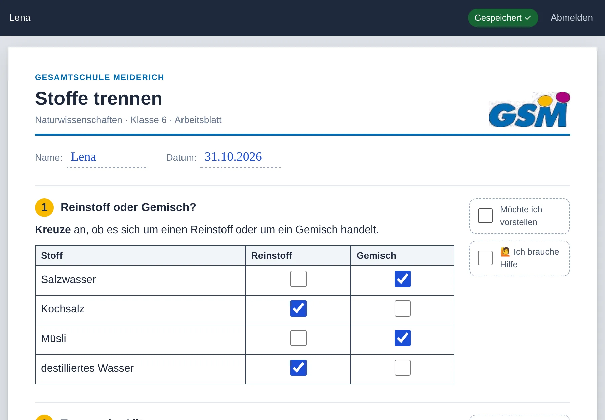
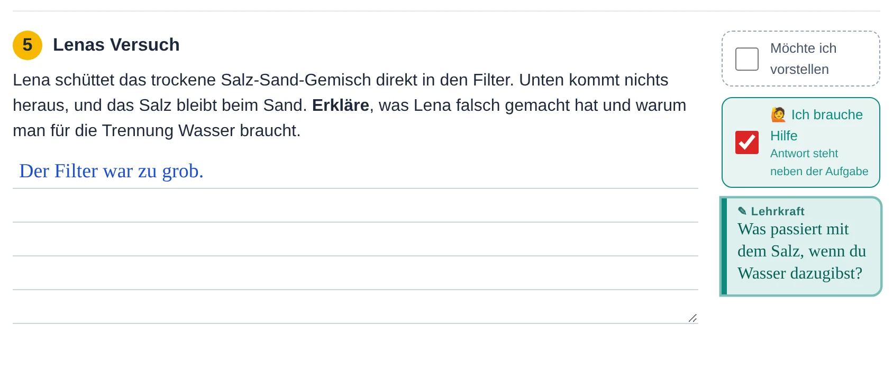
Pseudonym genügt. Keine Klasse, keine Speicherung über die Stunde hinaus.
Ich kommentiere, schalte die KI-Lernhilfe für eine Aufgabe frei – oder komme vorbei.
Wer sich meldet, bringt die Aufgabe mit den eigenen Antworten an die digitale Tafel.
Zum Ausprobieren: mit einem beliebigen Pseudonym anmelden. Das Beispiel ist das Demo-Arbeitsblatt „Stoffe trennen“ (Naturwissenschaften, Klasse 6).
Erklärfilme im Bilderbuch-Stil. Eine Lehrerin erzählt vom Bühnenrand, die Szenen falten und klappen sich aus Papier auf – in Geschichte, Chemie oder Biologie.
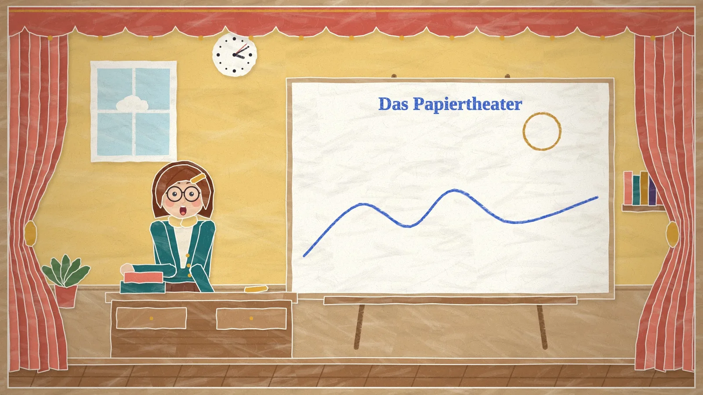
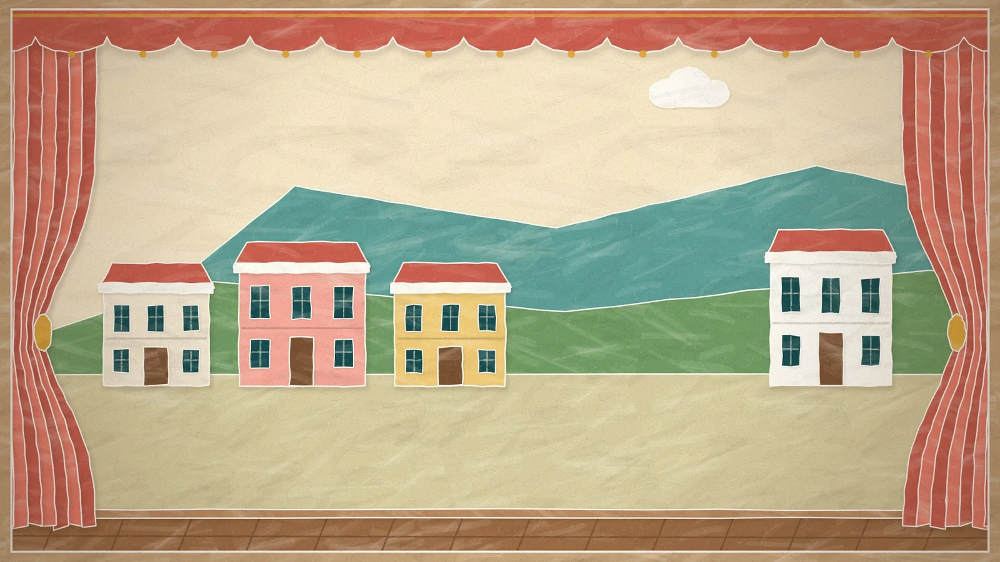
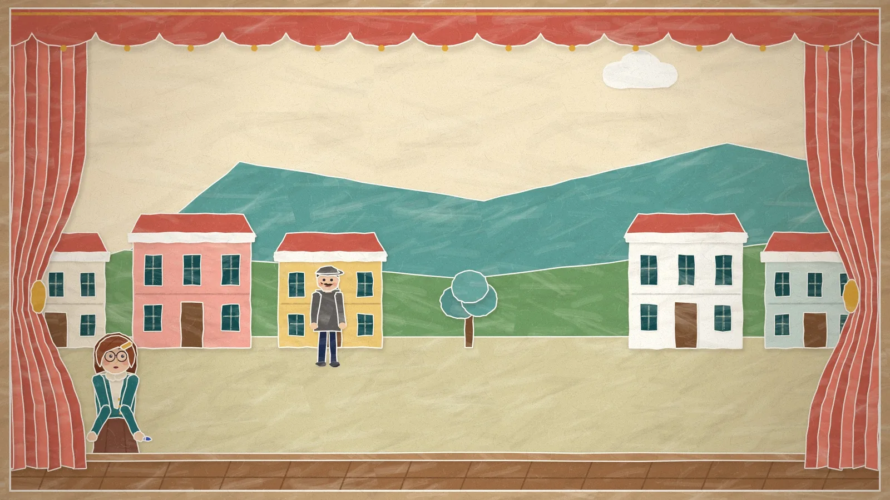
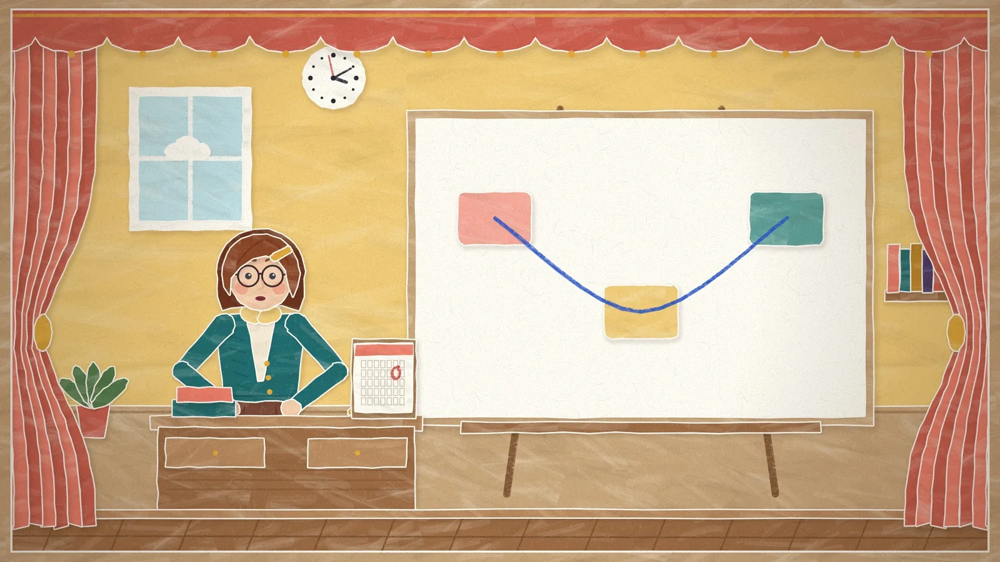
Standbilder aus der Vorlage. Der Demofilm folgt.
Szenen und Sprechtext bekomme ich zur Freigabe, bevor gebaut wird.
Bühne, Figuren, Übergänge und Stimme bleiben gleich. Nur der Inhalt wechselt.
Hält nach jeder Szene zum Besprechen an. Dazu Kapitel, Untertitel und ein MP4.
Ein 3D-Buch für Klasse 5/6: blättern, an Laschen ziehen, Figuren antippen. Jede Figur, jede Kulisse und jeder Klang entsteht im Code.
Läuft im Browser, auf dem iPad und am PC. Mit Erzählstimme, ganz ohne Internetverbindung.
Zeitrad der Sonne, 3300 bis 30 v. Chr.
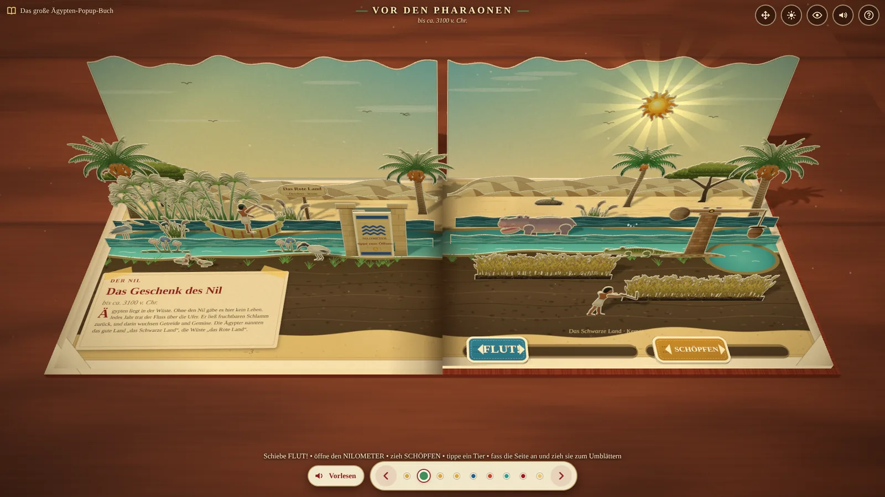
Flut, Nilometer, Schöpfen
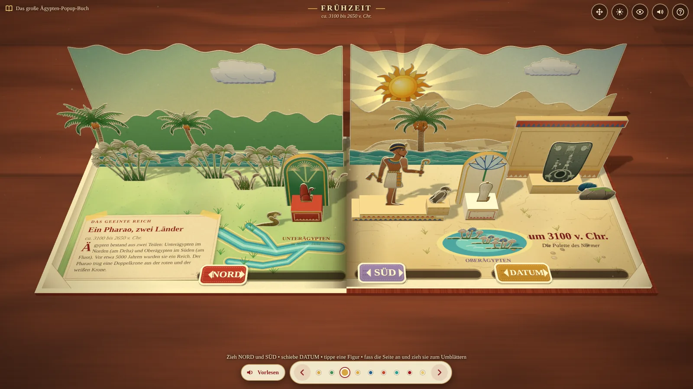
Die Doppelkrone entsteht
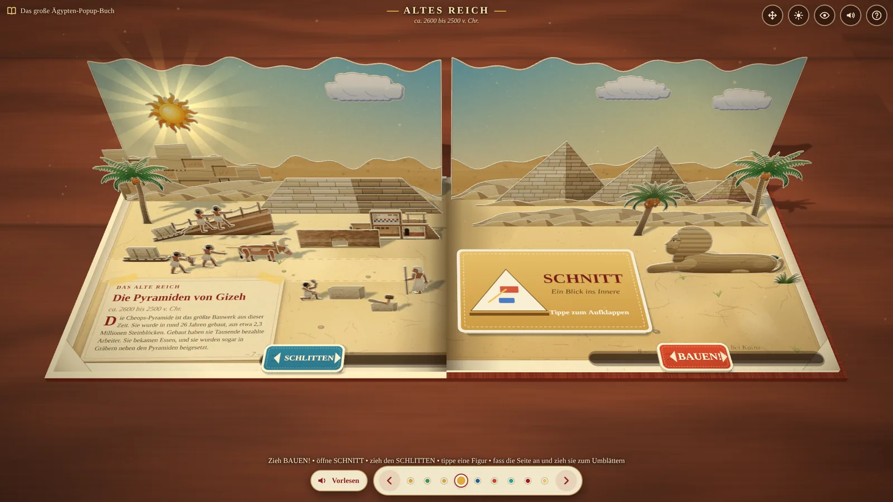
Bauen, Schnitt, Schlitten
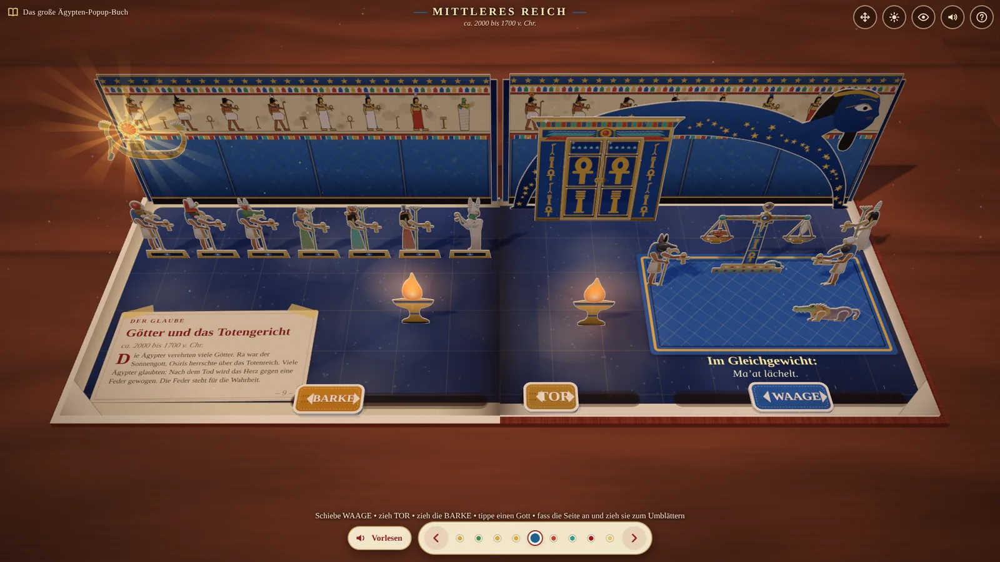
Waage, Tor, Barke
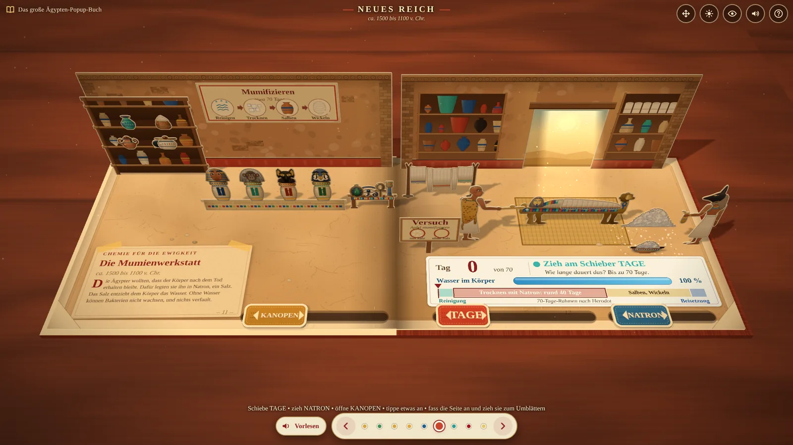
Natron, Tage, Kanopen – Chemie-Station
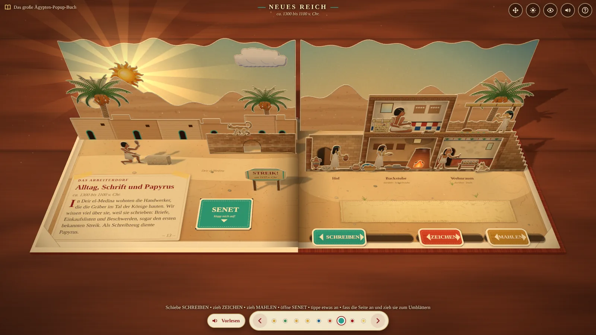
Schreiben, Mahlen, Senet
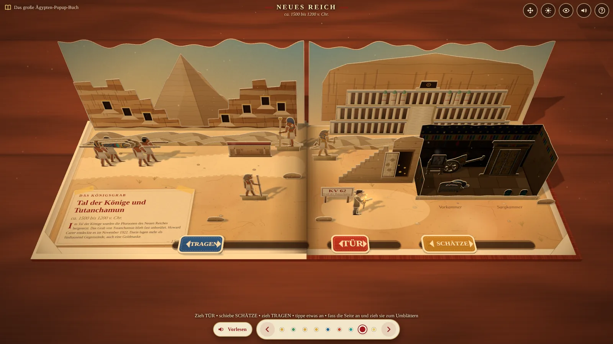
Tutanchamuns Grab
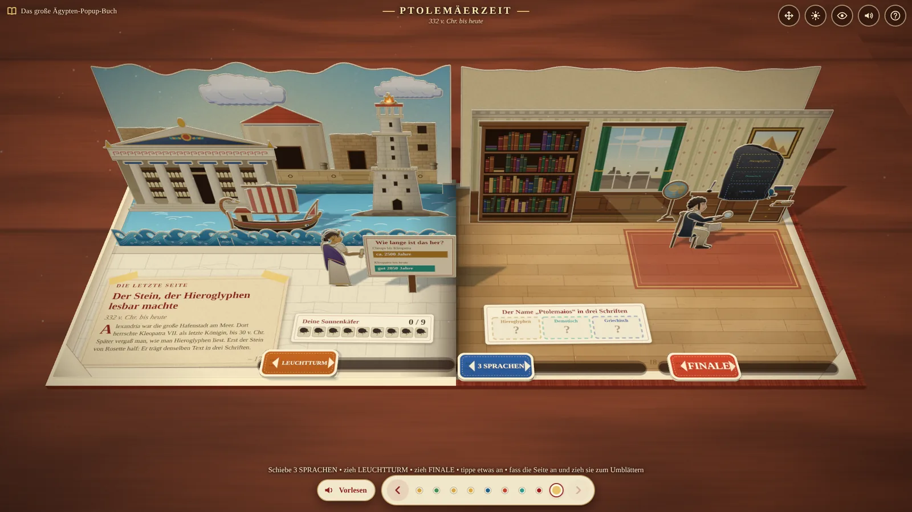
Drei Sprachen, Leuchtturm, Finale